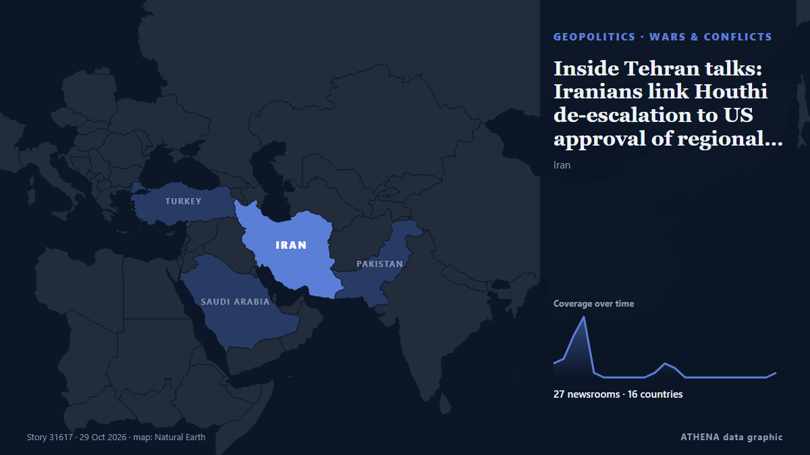

Inside Tehran talks: Iranians link Houthi de-escalation to US approval of regional truce

A day after Saudi Arabia and its two defence-pact partners sent senior officials to Tehran, sources say the clearest outcome is a promise to keep talking, not a deal to de-escalate on any front… from The National
Reported independently by 27 outlets in 16 countries since 26 Oct, first by Oman Observer; coverage is fading. ATHENA rates the risk elevated (4.5/10), driven mainly by the severity of the harm described and its geographic and sector reach. Confidence is 92% (high), with 27 independent outlets corroborating it and an average source reliability of 76%.
Why it matters: The Red Sea and the Bab el-Mandeb strait form the shortest sea route between Asia and Europe, through the Suez Canal. Attacks on merchant ships push carriers to sail around Africa, adding time and cost to world trade.
What changed: 1 new report in the 24 hours to 29 Oct.
First reported as: Iran to hold security talks with Saudi Arabia, Pakistan and Turkey
At a glance
Selected, scored and written by ATHENA's published methodology. No editor intervenes in individual events. How this is produced ›
| 26 Oct 03:07 UTC | 3 |
|---|---|
| 26 Oct 06:07 UTC | 4 |
| 26 Oct 09:07 UTC | 9 |
| 26 Oct 12:07 UTC | 13 |
| 26 Oct 15:07 UTC | 1 |
| 26 Oct 18:07 UTC | 0 |
| 26 Oct 21:07 UTC | 0 |
| 27 Oct 00:07 UTC | 0 |
| 27 Oct 03:07 UTC | 0 |
| 27 Oct 06:07 UTC | 0 |
| 27 Oct 09:07 UTC | 1 |
| 27 Oct 12:07 UTC | 3 |
| 27 Oct 15:07 UTC | 2 |
| 27 Oct 18:07 UTC | 0 |
| 27 Oct 21:07 UTC | 0 |
| 28 Oct 00:07 UTC | 0 |
| 28 Oct 03:07 UTC | 0 |
| 28 Oct 06:07 UTC | 0 |
| 28 Oct 09:07 UTC | 0 |
| 28 Oct 12:07 UTC | 0 |
| 28 Oct 15:07 UTC | 0 |
| 28 Oct 18:07 UTC | 0 |
| 28 Oct 21:07 UTC | 1 |
| 26 Oct 08:51 UTC | 0.0 |
|---|---|
| 26 Oct 09:45 UTC | 2.4 |
| 26 Oct 09:55 UTC | 5.2 |
| 26 Oct 10:18 UTC | 5.4 |
| 27 Oct 11:17 UTC | 5.0 |
| 29 Oct 00:00 UTC | 4.5 |
Why these numbers
Importance
Risk
Confidence
The reporting — who reported it, and when
headline as published · opens the original- Oman Observer · OmanIran to hold security talks with Saudi, Pakistan, Turkiye
- Al-Monitor · United StatesSaudi defence pact countries hold talks in Iran as Houthis launch more attacks
- The New Arab · INTSaudi-led talks in Tehran seek to avert renewed Iran, US war
- Rigzone · United StatesSaudi, Turkish Officials Travel to Iran to Cool Tensions
- IRNA (English) · IranBaqaei: Tehran meeting to focus on endogenous security
- to vima · GreeceSaudi Arabia, Turkey and Pakistan to Meet Iranian Leaders
- Turkish Minute · TurkeyIran to hold security talks with Saudi Arabia, Pakistan and Turkey
- Punch · NigeriaIran holds security talks with Saudi, Pakistan, Turkey
- Iran International (English) · IranMecca defense pact members hold talks with Iran
- TheJournal.ie · IrelandIran to engage in security talks with Saudi, Pakistan and Turkey
- The New Arab · INTSaudi Arabia, Turkey and Pakistan hold security talks in Iran
- AzerNews · AzerbaijanSaudi, Pakistani and Turkish officials to visit Tehran for regional security talks
- Hürriyet Daily News · TurkeyMecca pact countries to hold security talks with Iranian officials in Tehran
- Al-Monitor · United StatesHouthis attack Saudi Arabia before high-stakes talks in Tehran
- Vanguard · NigeriaHouthis attack Saudi Arabia before high-stakes talks in Tehran
- Channels TV · NigeriaIran To Hold Security Talks With Saudi, Pakistan, Turkey
- Business Recorder · PakistanSaudi Arabia says talks in Tehran aim to prevent escalation
- The New York Times (World) · United StatesFlurry of Diplomacy in Iran Amid Reports of U.S. and Israeli Plans to Renew War
- The Jerusalem Post · IsraelMecca defense pact faces test as Saudi delegation arrives for high-stakes Iran talks - analysis
- Free Malaysia Today · MalaysiaHouthis attack Saudi Arabia ahead of high-stakes talks in Tehran
- Luxembourg Times · LuxembourgHouthis attack Saudi Arabia before high-stakes talks in Tehran
- Cyprus Mail · CyprusIran hosts Saudi defence pact states as Houthis launch more attacks
- Mehr News (English) · IranIran, Pakistan, Turkey and Saudi Arabia meeting held
- IRNA (English) · IranIran, Pakistan, Turkey, and Saudi Arabia open quadrilateral talks in Tehran
- Anadolu Agency (English) · TurkeyTürkiye, Saudi Arabia, Pakistan, Iran hold quadrilateral meeting in Tehran
- Anadolu Agency (English) · TurkeyIran ready to take steps toward regional cooperation, resolving differences: President
- Mehr News (English) · IranFour-way meeting in Tehran
- Turkish Minute · TurkeyTurkey joins Saudi Arabia, Pakistan in Iran war talks
- Al Jazeera English · QatarIran says US ‘not serious’ about talks amid Tehran meeting
- The National · United Arab EmiratesInside Tehran talks: Iranians link Houthi de-escalation to US approval of regional truce
- Gulf News · United Arab EmiratesTehran talks falter as Houthis escalate attacks on Saudi Arabia, Turkey advances defence pact
- Tehran Times · IranBagheri: Tehran quadrilateral meeting reflects Iran’s defense capabilities
- OilPrice.com · United KingdomPeace Talks Won’t Save Oil Buyers From $100-Plus Oil